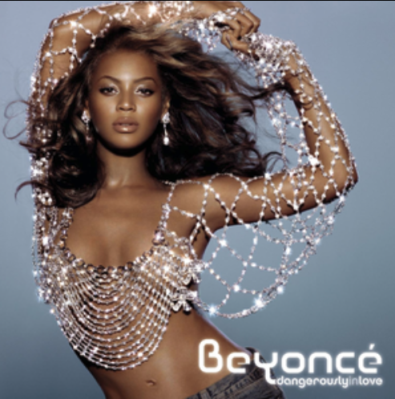

Dangerously in Love

- Featured song
- Crazy in Love
- Theme
- Confidence, independence, and arrival
- Why it matters
- It marked Beyoncé’s transition from group success to solo dominance, announcing her as a force with her own voice, vision, and identity.
Crazy in Love is the sound of emergence - bold, magnetic, and impossible to ignore. With its explosive energy and undeniable swagger, Beyoncé steps out from Destiny’s Child and into full control of her narrative. This era introduces her signature blend of confidence and charisma, signaling not just a solo debut, but the arrival of a cultural icon in the making.
Reflections
Artistic Growth
Beyoncé’s discography reflects a deliberate and fearless evolution—each era building on the last while redefining what she’s capable of. From the confident emergence of Dangerously in Love to the introspective storytelling of Cowboy Carter, her music moves across genres, identities, and cultural spaces with intention. Rather than staying within one sound, she continuously challenges expectations, blending R&B, pop, house, and country to reflect both personal growth and broader cultural narratives. This progression highlights not just artistic versatility, but a commitment to innovation, ownership, and legacy-building.
Interactive Exploration
This experience invites users to engage with Beyoncé’s artistry beyond passive listening. By filtering albums and revealing layered meanings, the site mirrors how her music itself unfolds—intentionally, and often with deeper context beneath the surface. The interactive elements encourage curiosity, allowing users to connect themes across eras and recognize patterns in her evolution. In this way, the site becomes more than a collection of songs—it becomes a guided exploration of artistic identity, cultural influence, and storytelling through music.